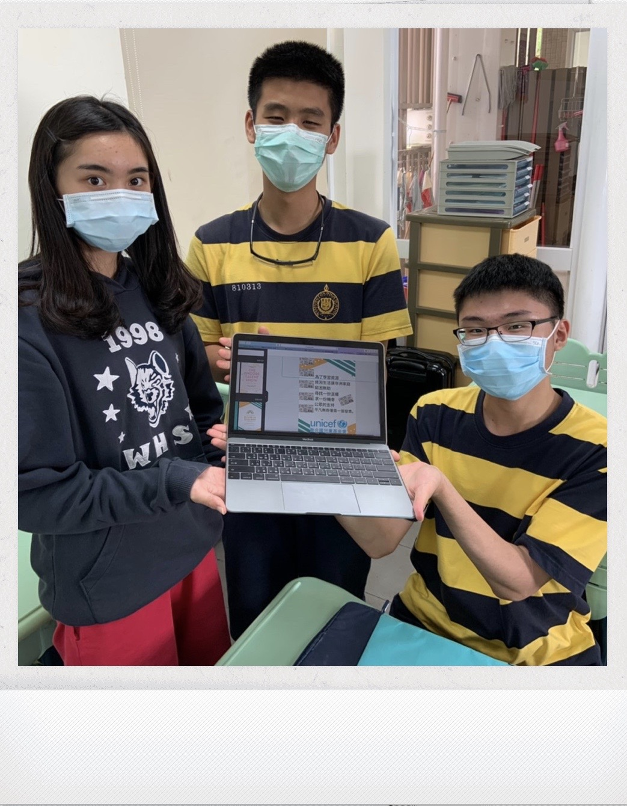

Joanna Chang
In a world where business and commerce govern almost every aspect of life, affective managerial systems and strategies are crucial to the success of any organization. My experience volunteering at a local welfare facility and working part-time in a hotel allowed me to observe human interaction as well as the functions of different levels of management. Feeling intrigued by the complexity and sophistication of the work, I am determined to delve into the world of business management, and the UK naturally becomes my first option for its vibrant business sector and access to the global market. Thus, I am applying for the King’s College London’s PHD Business Management programme.
I am Currently a Business Economics students at University of California, Riverside. The relatively diverse curriculum provided me with opportunities to acquire fundamental knowledge of economics, marketing and organization behaviour. Microeconomics introduced me to the operation of world economics while Macroeconomics allowed me to deepen my understanding of macroeconomics and other economic systems. On the other hand, Introduction to Marketing and Organization Behaviour helped me establish basic concepts of marketing and human resource management. In these two courses, I conducted two projects: a marketing plan and a research on labour overworking. In the marketing planning for a series of protein shake and healthy meal products, my group analysed four marketing elements, product, price, promotion and place, to generate a feasible marketing plan. This experience allowed me to apply the theories and principles acquired in class in real-life scenarios and nurtured my interest in the management of business activities. In the research project, I investigated how vacation deficit influences worker performance. I was shocked by the severity of overworking among labourers in Taiwan and found it forming a vicious circle demanding to be tackled through proper human resource management. This also contributes to my decision of studying business management at Grad School.
The King’s School of Business Management will allow me to lay a solid foundation in business studies and hone my critical thinking and analytical abilities. With a comprehensive understanding of business management, I believe that I will be well-prepared for leaning at a more advanced level. The rigorous learning environment and inclusive curriculum offered by King’s Business School will also help me live up to my full potential as I complete my undergraduate study and embark on my career path in this area.
Experience
Cashier
• Worked part-time in a commercial hotel near my house
• Assisted in tasks including customer service, kitchen chores, and maintaining the
restaurant environments
• Responsible for checking out customer
President
• Developed public speaking skills, communicated with delegates, and gained insight into
international issues
Participant
•Advanced my understanding of psychology and experienced the life of a psychology student
in university
Vice President
• Organized charity bazaar and sold socks to raise funds for underprivileged
children; assisted members and the director, took meeting minutes, and
organized events
Education
UC Riverside
Portfolio

